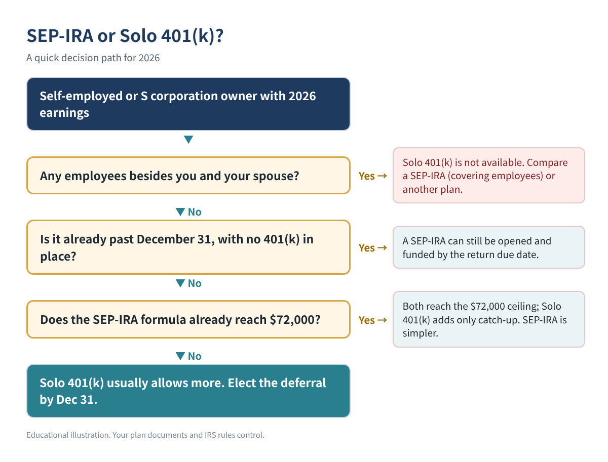
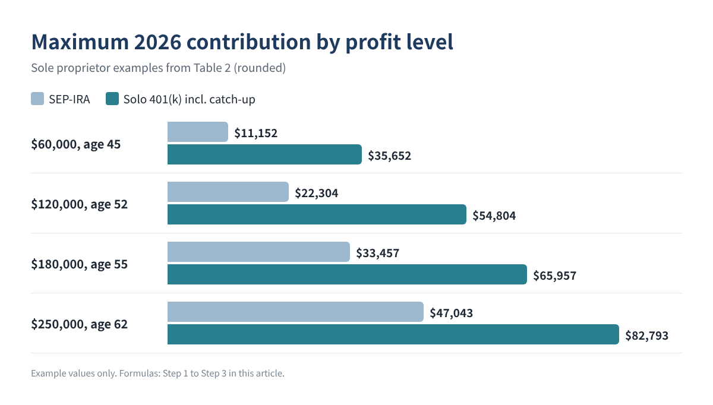
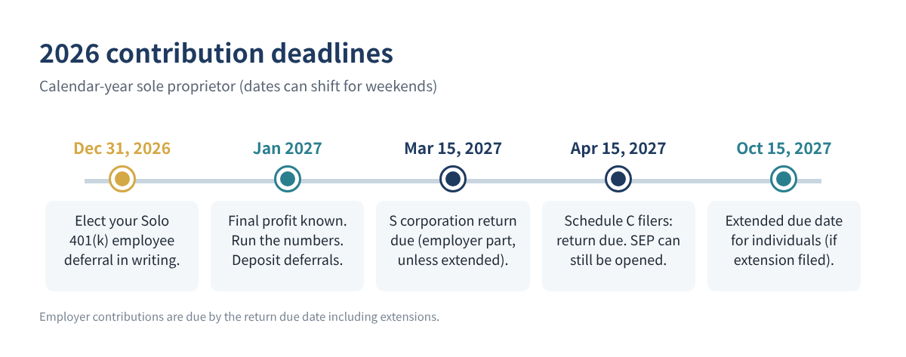

Solo 401(k) or SEP-IRA for 2026? Calculate Your Maximum Contribution Step by Step
If you are self-employed with no employees, two retirement plans come up every year-end: the SEP-IRA and the Solo 401(k) (also called a one-participant 401(k)). Both let you put away far more than a regular IRA, and both reduce your taxable income. But for the same profit, they can allow very different amounts, and one of them has a December 31 step that is easy to miss.
This guide shows the 2026 limits, the formula behind both plans, worked examples you can check with a calculator, and the deadlines. You can rebuild everything in a spreadsheet in about fifteen minutes.
Who this is for: sole proprietors and single-member LLC owners who file Schedule C, freelancers and contractors, and S corporation owners who pay themselves a W-2 salary, with no employees other than a spouse.
The 2026 numbers you need
These figures come from the IRS cost-of-living table and newsroom release for 2026 (sources at the end).
| 2026 limit | Amount | Applies to |
|---|---|---|
| Employee elective deferral | $24,500 | Solo 401(k) |
| Catch-up, age 50+ | $8,000 | Solo 401(k) |
| Catch-up, ages 60–63 | $11,250 (instead of $8,000) | Solo 401(k) |
| Total annual additions (excl. catch-up) | $72,000 | Both plans |
| Maximum compensation considered | $360,000 | Both plans |
| Social security wage base | $184,500 | SE tax calculation |
Table 1. 2026 IRS limits used in this article.
The key difference: a SEP-IRA only allows the "employer" part, a percentage of your earnings. A Solo 401(k) allows the same employer part plus an "employee" deferral of up to $24,500, plus catch-up if you are 50 or older. At moderate profit levels the deferral makes the Solo 401(k) much larger.

Step 1. Find your plan compensation (sole proprietor or single-member LLC)
For self-employed people, the IRS defines compensation as net earnings from self-employment after deducting half of your self-employment tax and the contributions themselves. In practice you calculate it in three short lines. Put your Schedule C net profit in cell B2:
B3 SE tax: =MIN(B2*0.9235, 184500)*0.124 + B2*0.9235*0.029 B4 Half of SE tax: =B3/2 B5 Base for the plan: =B2 - B4
The 0.9235 factor and the 12.4% / 2.9% split come from Schedule SE; the social security part stops at the 2026 wage base of $184,500. (This simple version ignores W-2 wages from another job, which would use up part of the wage base.)
Step 2. Calculate the employer contribution (both plans)
The plan rate is 25%, but because your "compensation" is itself reduced by the contribution, the effective rate for a self-employed person works out to 25% ÷ 125% = 20% of the base from Step 1. IRS Publication 560 has a rate table and worksheet for this; use it to confirm your number.
B6 Employer part (SEP max): =MIN(B5*0.20, 72000)
For an S corporation owner, it is simpler: the employer part is 25% of your W-2 salary as your plan defines it (generally including your own deferrals). Distributions do not count.
Step 3. Add the employee deferral and catch-up (Solo 401(k) only)
B7 Age at Dec 31, 2026: (type it) B8 Deferral: =MIN(24500, B5) B9 Catch-up: =IF(AND(B7>=60, B7<=63), 11250, IF(B7>=50, 8000, 0)) B10 Solo 401(k) max: =MIN(B6 + B8, 72000, B5) + B9
The employer part plus the deferral cannot exceed $72,000 or 100% of your compensation; catch-up sits on top of that limit.
Worked examples
| Example (illustration) | SE tax | Base | SEP-IRA max | Solo 401(k) max |
|---|---|---|---|---|
| $60,000 profit, age 45 | $8,478 | $55,761 | $11,152 | $35,652 |
| $120,000 profit, age 52 | $16,955 | $111,522 | $22,304 | $54,804 |
| $180,000 profit, age 55 | $25,433 | $167,283 | $33,457 | $65,957 |
| $250,000 profit, age 62 | $29,573 | $235,213 | $47,043 | $82,793 |
Table 2. Sole proprietor examples using the formulas above (rounded). Example values only; your results depend on your own numbers.
Look at the second row. With $120,000 of profit at age 52, the SEP-IRA tops out at about $22,304, while the Solo 401(k) allows about $54,804. The extra $32,500 is the $24,500 deferral plus the $8,000 catch-up. At very high profits the gap narrows, because both plans run into the $72,000 ceiling.

For an S corporation owner, age 61, paid a $100,000 W-2 salary: the SEP-IRA maximum is $25,000 (25% of salary). The Solo 401(k) maximum is $25,000 + $24,500 + $11,250 = $60,750.
What it might save
Traditional (pre-tax) contributions reduce your income tax, not your self-employment tax. A rough estimate is the contribution times your top federal bracket: $10,000 at a 22% bracket is about $2,200 of federal income tax, plus any state tax. Roth contributions save nothing now but grow tax-free; many Solo 401(k) plans offer a Roth option for the employee deferral.
Step 4. Watch the deadlines

- December 31, 2026: if you already have a Solo 401(k), the employee deferral for 2026 must be elected by the end of the year. Put the election in writing and keep it with your plan records. The money itself can be deposited later, up to the return due date.
- Your return due date, including extensions: the employer contribution for both plans. A SEP-IRA can even be opened this late for 2026, which makes it the fallback if you missed December.
- After year-end: recent law allows a sole proprietor with no employees to adopt a new 401(k) after the year ends in some cases. The rules for first-year employee deferrals are narrow, so confirm with your plan provider before counting on them.
- Form 5500-EZ: a one-participant plan generally must file once plan assets reach $250,000 or more at year-end. Check the Form 5500-EZ instructions for the due date.
| SEP-IRA | Solo 401(k) | |
|---|---|---|
| Who can use it | Any business; must cover eligible employees | Owner (and spouse) with no other employees |
| Employee deferral | No | Up to $24,500 + catch-up |
| Roth option | Depends on provider | Often available for deferrals |
| Latest date to open for 2026 | Return due date incl. extensions | Existing plan needed for the Dec 31 deferral election |
| Annual filing | None for the owner | Form 5500-EZ once assets reach $250,000 |
Table 3. Side-by-side summary.
Common mistakes
- Using 25% of net profit for a sole proprietor. The effective rate is about 20% of profit after half of SE tax. Using 25% overstates the contribution and creates an excess contribution.
- Missing the December 31 deferral election. Without it, an existing Solo 401(k) behaves like a SEP for 2026.
- Having employees. A Solo 401(k) is only for owners (and spouses) without other employees. A SEP-IRA with eligible employees requires the same percentage for them.
- Counting S corporation distributions. Only W-2 wages count for an S corporation owner.
- Contributing to two plans with two full limits. The $24,500 deferral limit is per person across all 401(k) and 403(b) plans, including one at a day job.
- Forgetting the Roth catch-up rule for high-wage earners. SECURE 2.0 requires catch-up contributions for certain higher-income employees to be Roth; final IRS regulations generally apply from 2027. If you are an S corporation owner with high W-2 wages, ask your plan provider how it applies to you.
FAQ
Can I have both a SEP-IRA and a Solo 401(k)?
It is possible, but the employer contributions share the same overall limits, and some 401(k) prototype documents restrict it. Most one-person businesses pick one plan.
My spouse works in the business. Does that change anything?
A spouse who works in the business can usually join the Solo 401(k) and make their own deferral and employer contribution based on their own compensation, which can roughly double the household total.
I also have a 401(k) at my day job. Can I still use a Solo 401(k)?
Yes, but your $24,500 employee deferral is shared across both plans. The employer part from your business is separate and still counts toward the $72,000 per-plan limit.
Do these contributions lower my self-employment tax?
No. For a sole proprietor, the deduction for your own contributions reduces income tax only. Self-employment tax is figured before it.
Is a SEP-IRA ever better?
A SEP-IRA is simpler: no plan document beyond the IRS model form, no Form 5500-EZ, and it can be opened after December 31. If your profit is high enough that both plans reach $72,000, or you missed the December election, it may be the practical choice.
Quick checklist
- ☐ Net profit (or S corporation W-2 salary) for 2026 estimated
- ☐ Half of SE tax subtracted; 20% employer rate applied (sole proprietors)
- ☐ Deferral and catch-up added for the Solo 401(k)
- ☐ Deferral elected in writing by December 31, 2026 (existing Solo 401(k))
- ☐ Employer contribution deposited by the return due date (with extensions)
- ☐ Total checked against the $72,000 limit and your day-job 401(k)
- ☐ Form 5500-EZ needed? (plan assets $250,000 or more)
This article is for education only and is not tax, legal or investment advice, and it does not guarantee any result. Your plan document and current IRS rules control; check them or ask a qualified professional before you contribute.
Sources
- IRS: COLA increases for dollar limitations on benefits and contributions
- IRS newsroom: 401(k) limit increases to $24,500 for 2026, IRA limit increases to $7,500
- IRS: One-participant 401(k) plans
- IRS Publication 560, Retirement Plans for Small Business
- IRS newsroom: Final regulations on the Roth catch-up rule (IR-2025-91)
- IRS Topic No. 751, Social Security and Medicare withholding rates